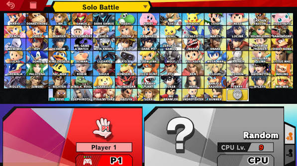

Présentation
Super Smash Bros. Ultimate est un jeu de combat de Nintendo sorti sur Nintendo Switch le 7 décembre 2018. Il a été dirigé par Masahiro Sakurai et réunit des personnages issus de nombreuses licences de jeux vidéo, avec pour slogan « Tout le monde est là ! ».

Gameplay
Ici, pas de barre de vie : plus un combattant subit de dégâts, plus il est éjecté loin. Le but est de projeter ses adversaires hors de l'écran, ce qui rend chaque combat imprévisible.
Les éléments clés
- Plus de 80 combattants jouables, de Mario à Link en passant par Pikachu
- Des attaques spéciales propres à chaque personnage
- Le Smash Final, une attaque ultime déclenchée avec la balle Smash
- Des dizaines de stages inspirés des univers de jeux vidéo
Modes de jeu
Combat local et en ligne
Jusqu'à huit joueurs peuvent s'affronter sur une même console, et le jeu propose aussi des parties en ligne.
Mode Aventure
Un mode solo où l'on affronte de nombreux adversaires pour débloquer des combattants et des esprits. Pour en savoir plus, consultez le site officiel.
Esport
Au-delà du jeu entre amis, Smash Ultimate possède une scène compétitive très active. Des tournois comme Evo, Genesis ou The Big House réunissent des joueurs du monde entier, et la précision compte autant que les réflexes.
Règles habituelles en tournoi
- Matchs en 1 contre 1, généralement 3 vies et 7 minutes
- Objets désactivés et Smash Final désactivé
- Sélection des stages par éliminations successives
- Les joueurs de haut niveau se spécialisent souvent sur un ou deux personnages
Suivre la compétition
Les finales des grands tournois sont diffusées en direct sur Twitch et YouTube, avec des commentaires qui expliquent les choix des joueurs.